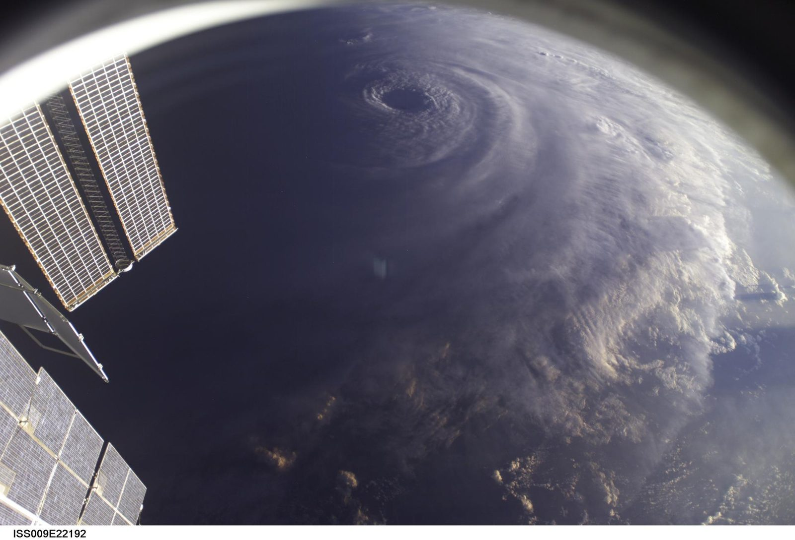

Stewardship, measured in outcomes.
Not every result is a dataset. Some are lives pulled from the sea, classrooms full of new scientists, and decisions a warming world can trust. A few of the outcomes behind nearly fifty years of work.
Search and rescue.
For more than 25 years, SSAI has helped operate elements of NOAA's SARSAT program, the satellite system that detects emergency beacons from downed aircraft, sinking vessels, and stranded hikers and routes them to first responders. The systems we support have helped aid roughly 7,000 lives. It is the clearest answer to why this work matters: science, watching over people.

NASA / ISSA planet of scientists.
Through the GLOBE program, SSAI builds and maintains the tools that put real Earth-science observation into the hands of students and citizens in 125 countries and more than 35,000 schools. Millions of measurements, of clouds, water, soil, and life, flow back to researchers. Watching over Earth, it turns out, is something we do together.
 NASA / ISS
NASA / ISSThe work, recognized.
Behind the outcomes is science of the highest standard, recognized by the agencies we serve and the journals that publish it.
MERRA-2
Our reanalysis of Earth's modern atmosphere, a continuous, physically consistent record of the climate, earned a NASA Agency Honor Award and underpins research worldwide.
Black Marble
Calibrated nighttime-lights products that track electrification, disasters, and human activity, from power restoration after storms to global development.
TEMPO
The data pipeline behind the first space mission to measure air pollution over North America hour by hour, turning a new instrument into public-health insight.
PACE
Engineering and data work for the mission reading the life of the ocean, phytoplankton, aerosols, and clouds, in unprecedented spectral detail.
ICESat-2
Helping measure the height of the planet to within a pencil-width, tracking the ice sheets, sea ice, and forests that signal a changing climate.
Hundreds of papers
SSAI scientists publish across climate, air quality, the cryosphere, heliophysics, and astrophysics every year. Browse the publications ↗
From observation to impact.
Every outcome traces back to the same loop, an instrument engineered, a mission operated, a signal turned into knowledge, and a decision made better because of it.